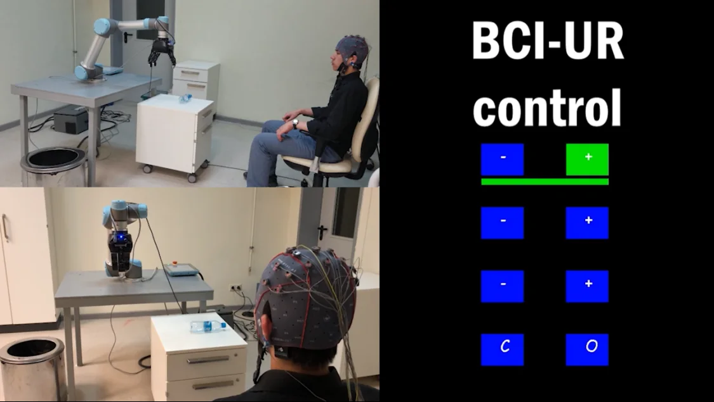

Machine learning for neural data
Representation learning, transformer models, and robust decoding methods for EEG, fNIRS, EMG, and intracranial recordings.
Research area →The Brain–Machine Intelligence Lab investigates machine learning for neural data and the design of brain–machine systems. We develop robust computational methods that connect neural signals with intelligent, assistive, and clinical technologies.

Our work brings AI and machine learning into dialogue with neural engineering, human–machine interaction, and translational neurotechnology.
Representation learning, transformer models, and robust decoding methods for EEG, fNIRS, EMG, and intracranial recordings.
Research area →Neural decoding for communication, control, neurorehabilitation, and assistive robotic systems.
Research area →Data-driven approaches to epilepsy research, cortical mapping, and clinically relevant neural-signal analysis.
Research area →Scientific Reports
Read publication ↗A presurgical evaluation workbench for exploring synthetic intracranial EEG, comparing model rankings, and inspecting signal evidence.
Explore project ↗Methods that reduce calibration requirements and improve transfer across participants and recording sessions.
Research area →BMI Lab brings together researchers and students working across machine learning, neural engineering, signal processing, and intelligent systems.
View peopleFor research collaboration, prospective students, and laboratory enquiries, contact the Brain–Machine Intelligence Lab at Nazarbayev University.
berdakh.abibullaev@nu.edu.kz